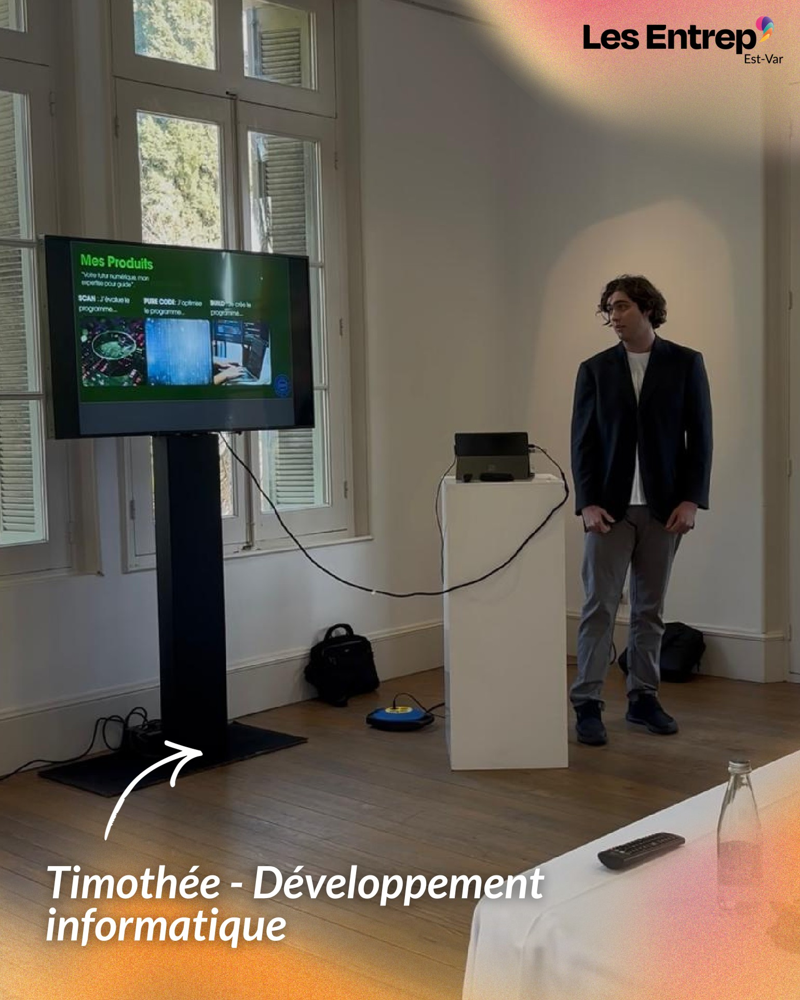
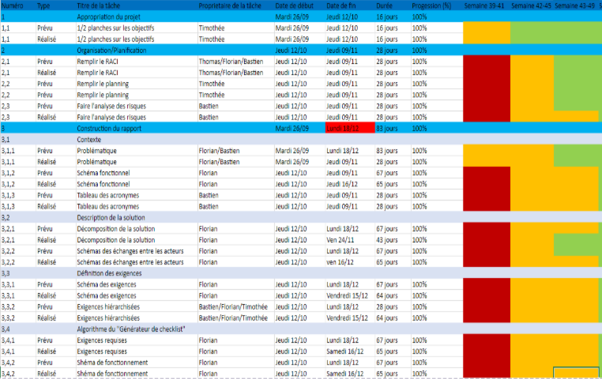

Développeur web et application mobile
Bienvenue dans mon portfolio !
Programmé avec un framework Javascript pendant la période de mon stage s'effectuant en juin, j'ai appris à programmer avec React.JS et Node.JS un site web dynamique pour un client
Codé en HTML, CSS et JavaScript, un site web pour mettre mes projets, et mon portfolio.
Lien GitHub du projet
Stage d'1 mois pour apprendre à vivre en entreprise, j'ai acquérit des nouvelles connaissances notamment de l'utilisation d'une Framework : Laravel pour programmer un site portfolio.
Lien GitHub du projet Portfolio sous laravel.
Utilisation du C# en programmation orientée objet pour un jeu du pendu.
Lien GitHub du projet d'application sous C#
Mise en conformité RGPD, déploiement et référencement dans le cadre du BTS SIO.
Création d'un site e-commerce sous WordPress durant le BTS.
Lien GitHub du projet E-commerce Wordpress
Jeu vidéo 2D en Java (POO, MVC, Client/Serveur, sockets) développé sous Eclipse.
Lien GitHub du projet Jeu 2D Java
Dans le cadre de mon examen oral du BAC j'ai dû faire un projet dans l'option SIN dans la mise en place d'un circuit électronique avec arduino codé sous C++ et d'une application mobile permettant de distribuer des croquettes pour animaux
Lien Gdrive (.zip) du projet
Formation de 6 mois sur l'auto-entrepreneuriat (juridique, marketing, économie).

Gestion de projets SAE en BUT avec mise en place de bonnes pratiques.

Podcast sur la neuro-atypie.
Écouter le replay
Un projet personnel que j'ai organisé, je devais présenter la formation du BUT réseaux et télécommunications aux lycéens du lycée Albert Camus pour vendre la formation.
Lors de ma première année en BUT, j'ai organisé une interview d'un professionnel en cybersécurité dans l'entreprise Schneider Electric de Carros.
Lien de l'enregistrement
Sensibilisation des étudiants sur la e-réputation et le cyber-harcèlement dans le cadre du BUT Réseaux et Télécommunications.